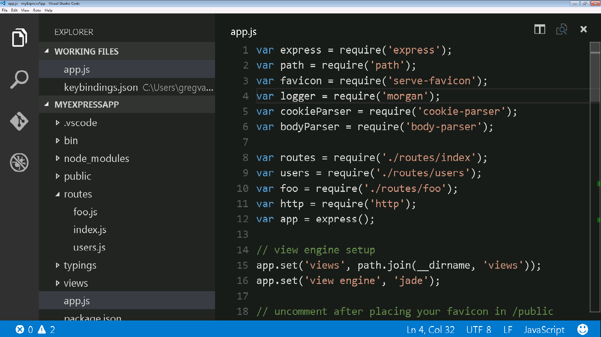

Accessibility
Visual Studio Code has many features to help make the editor accessible to all users. Zoom and High Contrast colors improve editor visibility, keyboard-only navigation allows use without a mouse and the editor has been optimized for screen readers.
Zoom
You can increase the Zoom level in VS Code with the
View > Zoom In command
(kb(workbench.action.zoomIn)). The zoom level
increases by 20% each time the command is executed. The
View >
Zoom Out
(kb(workbench.action.zoomOut)) command lets you
decrease the Zoom level.

Persisted Zoom Level
When you adjust the zoom level with the
View >
Zoom In / Out commands, the zoom level is
persisted in the window.zoomLevel
setting. The default value is 0 and each increment increases the
zoom level by 20%.
High Contrast Theme
We support a High Contrast color theme on all platforms. Use File > Preferences > Color Theme to display the Select Color Theme drop-down and select the High Contrast theme.

Keyboard Navigation
You will find that VS Code provides an exhaustive list of
commands in the
Command Palette
(kb(workbench.action.showCommands)) so that you
can run VS Code without using the mouse. Press
kb(workbench.action.showCommands) then type a
command name (e.g. 'git') to filter the list of commands.
VS Code also has many preset keyboard shortcuts for commands. These are displayed to the right of the command in the Command Palette.

You can also set your own keyboard shortcuts.
File > Preferences >
Keyboard Shortcuts brings up the
Default Keyboard Shortcuts in the left pane
and your customizable keybindings.json on the
right. See
Key Bindings
for more details on customizing or adding your own keyboard
shortcuts.
Tab Navigation
You can use the kbstyle(Tab) key to jump between
VS Code UI controls. Use kbstyle(Shift+Tab) to
tab in reverse order. As you tab through the UI controls, you
can see an indicator around the UI element once the element
gains focus.
Some areas that support Tab navigation are:
- The View switcher (Files, Search, Git, Debug)
- The header of collapsible sections in a view to expand/collapse
- Actions in views and sections
- Actions for items in the tree
Tab trapping
By default, pressing the kbstyle(Tab) within a
source code file inserts the Tab character (or spaces
depending on your Indentation setting) and does not leave the
open file. You can toggle the trapping of
kbstyle(Tab) with
kb(editor.action.toggleTabFocusMode) and
subsequent kbstyle(Tab) keys will move focus out
of the file. When default kbstyle(Tab) trapping
is off, you will see an indicator in the Status Bar.

You can also toggle kbstyle(Tab) trapping from
the
Command Palette
(kb(workbench.action.showCommands)) with the
Toggle Use of Tab Key for Setting Focus
action.
Read-only files never trap the kbstyle(Tab) key.
The Integrated Terminal panel respects the
kbstyle(Tab) trapping mode and can be toggled
with kb(editor.action.toggleTabFocusMode).
Screen Readers
VS Code supports screen readers in the editor using a strategy based on paging the text. We have tested using the NVDA screen reader, but we expect all screen readers to benefit from this support.
When using NVDA on Windows, we recommend to install this plugin from Derek Riemer, which increases NVDA's timeout for receiving a caret move event from 30ms to 200ms. This plugin will no longer be needed when NVDA ships a new version where the built-in timeout is increased from 30ms to 100ms.
The
Go to Next/Previous Error or Warning actions
(kb(editor.action.marker.next) and
kb(editor.action.marker.prev)) allow screen
readers to announce the error or warning messages.
When the suggestions pop up, they will get announced to screen
readers. It is possible to navigate the suggestions using
kbstyle(Ctrl+Up) and
kbstyle(Ctrl+Down), you can dismiss the
suggestions with kbstyle(Shift+Escape) and if
suggestions get in your way, you can disable the auto-popup of
suggestions with the
editor.quickSuggestions setting.
The Go to Next/Previous Difference actions (F7 and Shift+F7), when in a diff editor pane, will bring up the Diff Review Pane, which allows the navigation of the diffs, presented in a unified patch format. Arrow Up and Arrow Down can be used to navigate through the unchanged, inserted or deleted lines. Pressing Enter will return focus to the modified pane of the diff editor at the selected line number (or closest still existing line number in case a deleted line is selected). Use Escape or Shift+Escape to dismiss the Diff Review Pane.
The Integrated Terminal does not currently support screen readers. There is an open GitHub issue tracking this.
Accessibility Help
You can press
kb(editor.action.showAccessibilityHelp) to
trigger the Show Accessibility Help dialog
while in an editor to check the state of various accessibility
options in VS Code:

Debugger Accessibility
The VS Code debugger UI is user accessible and has the following features:
- Changes in debug state are read out (e.g. 'started', 'breakpoint hit', 'terminated', ...).
- All debug actions are keyboard accessible.
- Both the Debug View and Debug Console support Tab navigation.
-
Debug hover is keyboard accessible
(
kb(editor.action.showHover)).
Current Known Issues
VS Code has some known accessibility issues depending on the platform.
Windows
You can not use the keyboard (right, left arrow keys) to move between top-level menu items (File, Edit, View, etc). This is due to Electron issue #2504.
Mac
There is limited screen reader support for the editor with VoiceOver.
Linux
There is no screen reader support for the editor.
Next Steps
Read on to find out about:
- Visual Studio Code User Interface - A quick orientation to VS Code.
- Basic Editing - Learn about the powerful VS Code editor.
- Code Navigation - Move quickly through your source code.